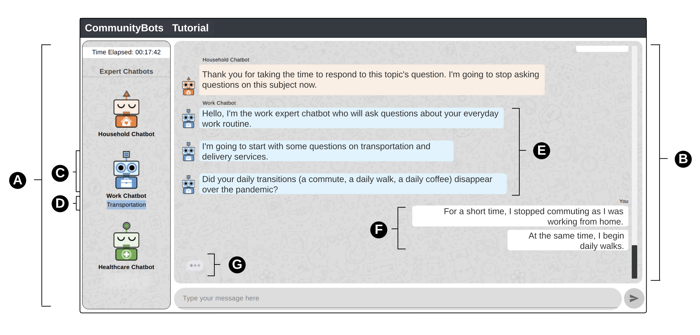

0000-0002-7625-7799
0000-0002-7625-7799
I am a postdoc researcher at CISPA Helmholtz Center for Information Security.
Prior to joining CISPA, I was a postdoc fellow in Department of Computer Science
at UMass Amherst.
I was awarded the
Postdoctoral Fellowship in Data Science and affiliated with Center for Data Science and HCI-VIS Lab.
Previously, I was selected as a
Presidential Fellow at
School of Data Science, and a
Praxis Fellow of
Digital Humanities at University of Virginia.
I received my Ph.D. in
Constructed Environment from
University of Virginia, Masters from
University at Buffalo, and B.Eng. from
Sichuan University.
My research interests comprise the topics of conversational AI, responsible data science, and trustworthy machine learning.
I want to better understand AI in order to have more responsible, explainable, and robust applications and implications for society.
AI presents a patchwork of less-than-human with superhuman capabilities,
calling for a deeper understanding of the exhibited intelligent behaviors and their impacts.
I have been involved in projects about conversational AI for social good, human-computer interaction, computational social science,
natural language processing, smart cities and data-driven transportation, information retrieval and machine learning in travel behavior analysis using big data.
- 11-2022: Our paper was accepted for the proceedings of 2023 ACM SIGCHI Conference on Computer-Supported Cooperative Work & Social Computing (CSCW)!
- 10-2022: Our paper was accepted for presentation at the TRB Annual Meeting 2023!
- 04-2022: Our paper was accepted for publication in the Journal of Public Transportation!
- 09-2021: I started my work as a CS postdoctoral fellow at UMass Amherst!
- 07-2021: I defended my PhD dissertation at University of Virginia!
- 05-2021: I was awarded the CDS Postdoctoral Fellowship in the Department of Computer Science at UMass Amherst!

Zhiqiu Jiang, Mashrur Rashik, Kunjal Panchal, Mahmood Jasim, Ali Sarvghad, Pari Riahi, Erica DeWitt, Fey Thurber, Narges Mahyar
Our recent work was accepted to CSCW 2023. We designed, developed, and evaluated CommunityBots — a multi-agent chatbot platform where each chatbot handles a different domain individually to elicit public input. To manage conversation across multiple topics and chatbots, we proposed a novel Conversation and Topic Management (CTM) mechanism that handles topic-switching and chatbot-switching based on user responses and intentions. Our evaluation demonstrates that CommunityBots participants were significantly more engaged, provided higher-quality responses, and experienced fewer conversational interruptions while conversing with multiple chatbots in the same session.
You can find the preprint paper here.